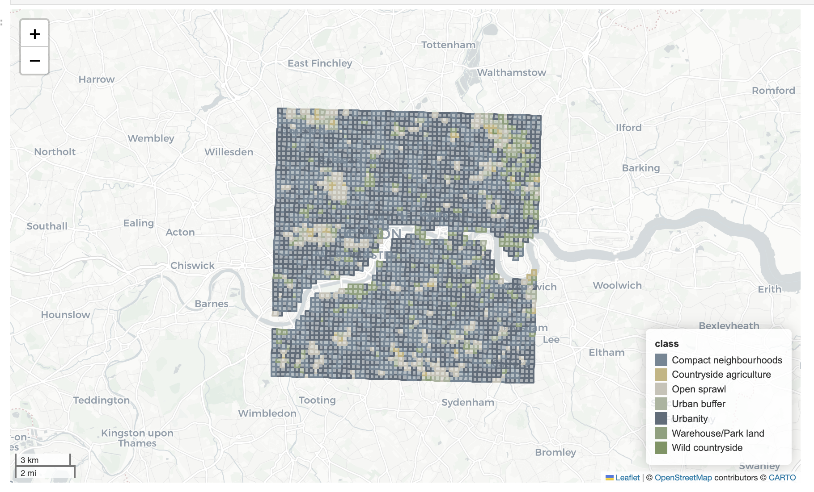
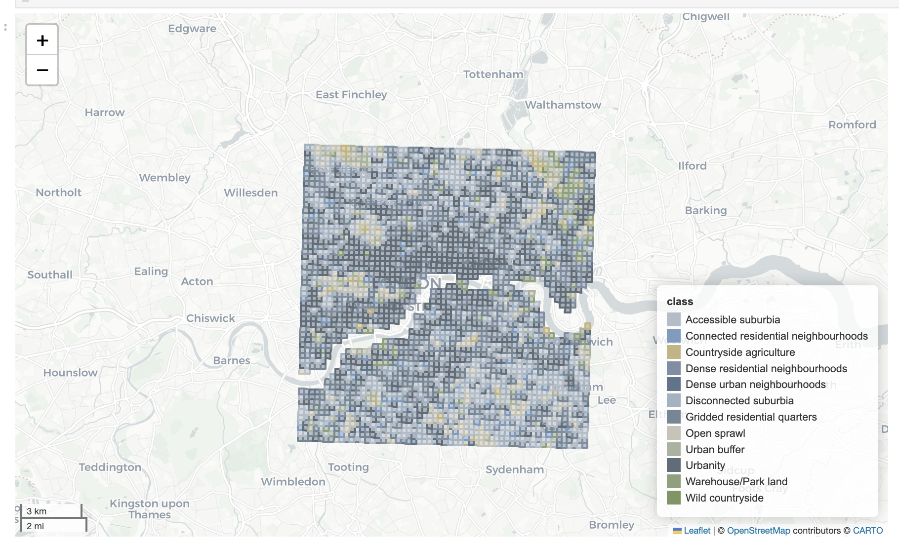
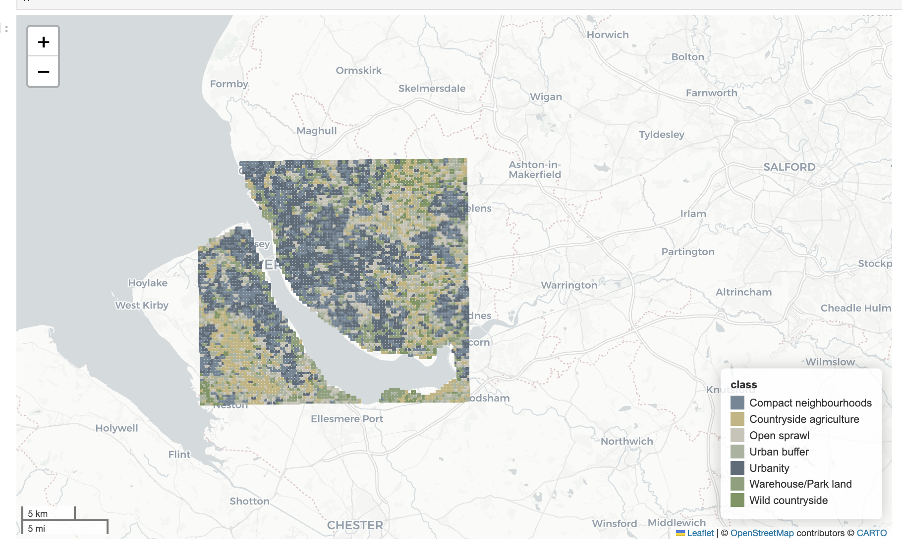

Software and Example datasets generated during Verification Exercises
Technical Note D6
Executive summary
In this note we present the software and datasets generated for the project and described in the relevant technical notes: - Interactive morphometric web application - Morphometric characterisation pipeline for Microsoft Building footprints - Morphometric characterisation pipeline for OvertureMaps Building footprints - AI Method for Urban Fabric classification and morphometric characterization - AI temporal data cube of Urban Fabric classifications
Software
Morphometrics
Interactive web application
We developed an interactive web app that displays the entire ground truth morphometric classification for Central Europe - HiMOC. The webapp make possible the sharing of the Central European data with an even wider audience, than the original specified stakeholders, regardless of their technical expertise. Furthermore, it allowed stakeholders to to visually explore the geospatial data, zoom in and out, pan across areas, and overlay different layers. It was the focus of multiple stakeholder consultations and enabled them to see final results, propose features, highlight mistakes. Furthermore, it allowed them to specify what format at what scale the final results would be most useful for them.
Morphometric characterisation pipeline for Microsoft Building footprints
The entire morphometric characterisation pipeline for the processing of micorsoft Building Footpritns, including reproducible notebooks and an enviroment is open-sourced and available on the Eurofab GitHub.
Morphometric characterisation pipeline for OvertureMaps Building footprints
The above reproducible pipeline was further adapted to process OvertureMaps data and is also available at the Eurofab GitHub.
EO
All EO analyses presented are supported by openly accessible software hosted on GitHub. The AI prediction pipeline, including preprocessing, embedding generation, and prediction of spatial signatures, is fully documented and accessible at EO repository.
Software: AI Method for Urban Fabric classification and morphometric characterization
All the work supporting this analysis can be found on GitHub. The main prediction pipeline, which includes data preprocessing, embedding creation, and spatial signature prediction, can be used as follows:
# Run the pipeline
pipeline.spatial_sig_prediction(
geo_path= "../spatial_signatures/eo/data/example/london_25_25_grid_clipped.geojson", ## Vector file (geojson or parquet) of analysis area (grid).
vrt_file= "../satellite_demoland/data/mosaic_cube/vrt_allbands/2017_combined.vrt", ## Vrt file of the satellite composite
xgb_weights = "../spatial_signatures/classifier/k12_h5_slided_gb_xgb_model.bin", ## Model weights for XGBoost classifier
model_weights = "../satellite_demoland/models/satlas/weights/satlas-model-v1-lowres.pth", ## Model weights for embedding model (Satlas)
output_path= "../vjgo8416-demoland/spatial_signatures/eo/data/predictions/test_london_h6.parquet", ## Output file with predictions, prediction probabilities and geometries
h3_resolution=5 ## h3 resolution to be added to analysis (spatial context)
)`More details and documentation on how to run the pipeline can be found in the example on the EuroFab project EO repository.
Example datasets
Morphometric model
The final morphometric model is around 40GB and takes around 10 hours to train. The full script and notebooks, including a reproducible enviroment is available at the project GitHub. A non-interactive version of the notebooks used in the pipeline is available on the EuroFab Project Website .

AI model
The final datacube including predictions for the years 2016 to 2021 for 7 and 12 classes can be found on the GitHub repository.
Example datasets generated during Verification Exercises
Here are some example visualisations showing London and Liverpool from the dataset:
London


Liverpool
